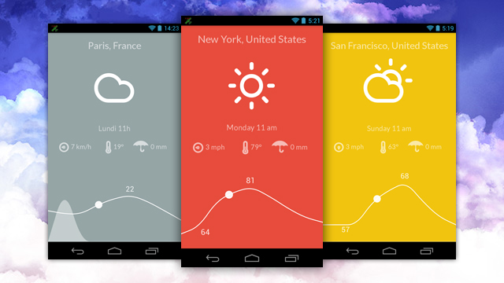
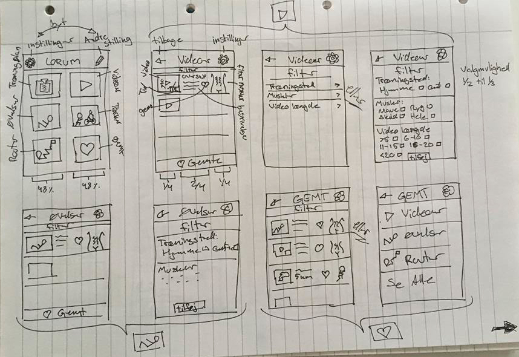
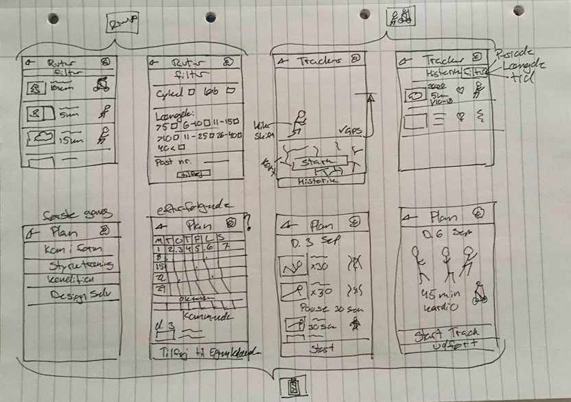
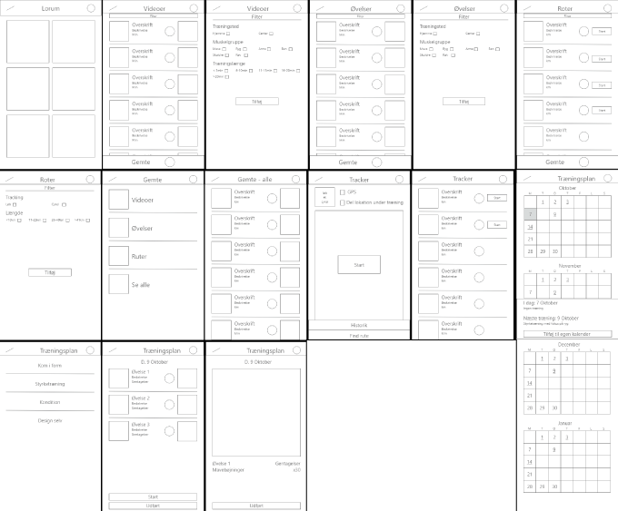
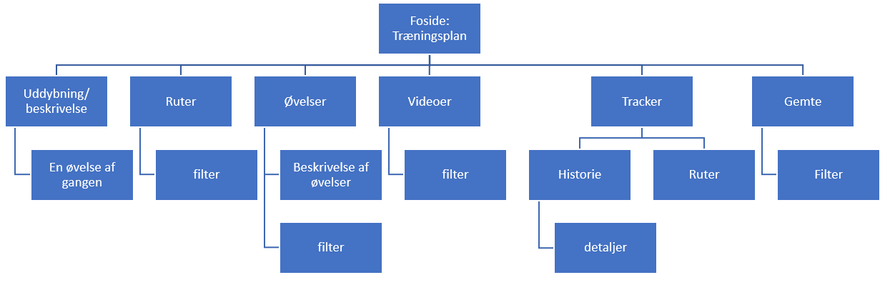
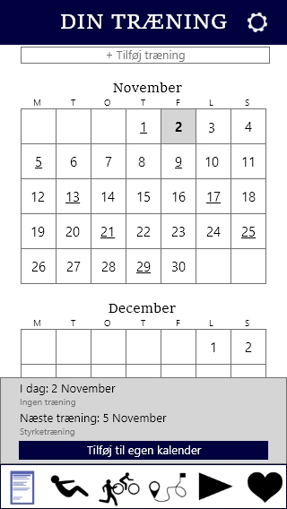
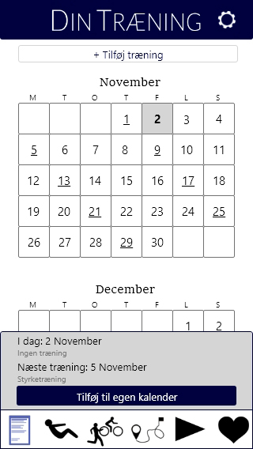

Byg en app
Opgavebeskrivelse
Flow projekt – byg en app [15 sp]
Produkt
I projektet for dette flow, vil du designe og skabe en prototype på en mobil app. Du vælger selv den type enhed/smartphone og tablet du udvikler til, såvel som operativsystem.
Appen skal være en løsning til en af de tre nedenstående problemstillinger. Du vil bruge Adobe XD til demonstrere skærmene i appen og deres flow samt bruge Adobe Illustrator til grafik til interfacet og Adobe Photoshop til billeder.
Vælg ét af følgende temaer til projekt:
- Vejr app
- Boligsøgnings app
- Sportstracking app
Opgaven må udvikles i samarbejde med andre fx ved fælles ideudvikling og dataindsamling samt udvikling af grafik og billeder. Men den endelige prototype aflevering skal være unik og individuel.
Appen skal udvikles til både mobil og tablet og der skal være indhold i mindst 3 menupunkter og mindst 3 niveauer. Indhold skal være tilstrækkeligt til at brugertest kan gennemføres men generisk indhold og prosatekst kan være placeholder.
Der skal udvikles forslag til interface elementer herunder ikoner til appen, alle tegnet i Adobe Illustrator.
I skal teste, om brugerne forstår jeres design. I skal undersøge, hvordan I bedst organiserer indholdet i appen, ved hjælp af testmetoden kortsortering, samt om brugerne forstår hvordan appen fungerer, ved at gennemføre tænke-højt tests på den potentielle målgruppe.
Rapport
Aflever 1 PDF-fil med det fulde navn.
Indhold max. 3 sider* tekst og max. 10 MB
Angiv link til din XD prototype på forsiden.
3* sider betyder 3 ”normalsider” og er et mål for mængden af tekstindhold = 2.400 anslag (incl mellemrum pr. side) og betyder at pdf-filen gerne må indeholde fx 8 sider/ark i alt.
Rapporten skal beskrive din prototype og visuelt dokumentere udviklingen, som fx en visuel logbog med kommenterede billeder/screendumps. Vi forventer som minimum:
- Kort beskrivelse af målgruppen (via 2 "personaer")
- App flowchart (fx tegnet i Illustrator)
- Dokumenter udvikling af screen mobile phone og tablet layout
- Dokumenter udvikling af app ikon design
- Kort opsummering af resultater af test (kortsortering + tænke-højt test)
Projektet giver i alt 15 study points, som er fordelt på:
- 5 points for aflevering af PDF fil
- 5 point for aflevering af app prototype i Adobe XD
- 5 points for deltagelse i præsentationsdag
Flowet afsluttes med en fælles præsentationsdag, hvor vi vurderer og diskuterer løsninger i plenum. Du vil desuden få en kort skriftlig kommentar på Moodle. Har du brug for yderligere feedback, kommentarer eller forslag til din portfolio, kan du kontakte underviserne efterfølgende.
DEADLINE: 1. nov., kl. 18:00.
Løsning
Min opgave er løst i Adobe XD. Jeg har lavet to XD'er, en til tablet og en til mobil.
Jeg har valgt en sports app, da det er den af de tre muligheder som jeg syntes er mest spændene.
Personas
Jeg startede med at lave 2 personaer. Jeg har taget udgangs punk i conzooms report af alle deres typer. Jeg fandt de to typer som brugte mest tid på træning (D1 og F1) og udarbejde ud fra de oplysningerne de 2 personaer.
Begge målgrupper bruger meget tid på træning, derudover arbejder de begge meget. Begge grupper har derfor brug for en nem og flexibel træning.
Mindmap
Efterfølgende lavede jeg en mindmap over indhold til appen og fandt hurtig ud af at jeg havde alt for meget med. Jeg prøvede derfor at sætte mig i min personas sted og lavede en ny mind map over hvad ville være vigtigst for dem.
Appen er tiltænk, folk som træner meget, men også arbejder meget.
De har brug for en nem og flexibel træning.
De bruger træningen til at gøre noget for sig selv.
Appen har ikke brug for at kunne beregne forbrænde kalorier m.m. da det ikke er det som er vigtigt for dem.
Skitser
 wireframe
Test og spørgeskema
For at se om bruger forstår det symboler, som jeg havde tænkt skulle være menupunkter, foretog jeg en åben kortsortering, hvor jeg bad en om at skrive under symbolerne hvad det ville mene, symbolerne står for.
Yderligere så havde jeg printet forsiden fra min warefrime, hvor efter jeg bed personen som at ligge dem i den rækkefølge som de ville foretrække at menupunkterne lå i.
Da rækkefølgen kan været meget individuel, ville jeg gerne havde fleres svar på hvilken rækkefølge som de ville foretrække. Jeg lavede derfor et spørgeskema. Samtidig brugte jeg denne mulighed til at se hvad folk gerne ville kunne filtrere efter når de skal finde øvelser og videoer. Spørgeskemaet lage jeg op i en trænings gruppe på Facebook.
Her fandt jeg ud af rækkefølgen ville være: Træningsplan – Øvelser – Tracker – Ruter – Videoer – Gemte.
Hvilke muskelgrupper som folk ønskede at kunne filteret, var det tydeligt at de kun var større muskelgrupper.
Angående videoen længde, hvor det størstedelen (38%) som ønskede sorter efter 5 minutter intervaller. På ruter til løbe og cykling foretrækker folk 5 km intervaller (54%).
Der jeg havde lavet prototypen, lavede jeg en tænke højt test. Da langt fra alle funktioner fungere stillede jeg brugeren to ”opgaver”, så brugeren ikke ville støde på nogle af disse ubrugbare funktioner (som f.eks. afspille videoer eller tilføje træning til træningsplanen).
Den første ”opgave” lod på at gennemføre træning for d. 5 november. Dette gik næsten uden problemer. Jeg fik gjort så man kan klikke på boksen kommer man til træningen, og ikke kun på kalenderen. Forsiden virker lige ved først syn lidt uoverskuelig, da der er meget indhold, men kort efter da testpersonen havde fået et overblik, var det ”fint/dejligt”.
Da der ikke er så meget indhold, og filterne ikke virker, tracking ikke virker og man ikke kan afspille videoer, lod anden opgave på at gå ind og se på Squat øvelsen. Her var den ingen problemer. Fik dog en kommentar om at det kunne være fedt hvis der var et link til en video som viser øvelsen (Da XD ikke er glad for videoer, har jeg ikke tilføjet denne del – men den ville komme med hvis appen skulle laves rigtig.).
Farver
Jeg startede med at gå ind på Adobe Color Wheel for at finde de farver som jeg ville gøre brug af. Jeg vidste i forvejen at jeg gerne ville være i det blå område, som primære farve. Den blå farve forbinder man med tiltro og kan derved få folk til at slappe af, og da mine personaer arbejder meget og bruger træning til afkobling skal det være noget de kan lægge tillid til. Jeg endte med en mørke- og lyseblå farve. Og en mørkerød til muskelgruppe ikonerne.
Forsiden på prototypen
Der jeg skulle lave prototypen syntes jeg ikke at min forside fungerede. Da det var aften, lagde jeg det fra mig, så jeg kunne komme lidt væk fra det.
Om natten havde jeg en drøm om at der ikke som sådan skulle være en forsiden, men en menulinje.
Om morgen gik jeg i gang med prototypen. Jeg ændrer derfor forsiden og farven. Hvor stadig ikke tilfreds. Så jeg ændrer farven tilbage til den mørkeblå, som den nu ser ud i prototypen.
Ikoner
Weekenden brugte jeg på at lave mine muskelgruppe ikoner. Denne del er vigtig for brugeren, da det er nemt og gennemskueligt hvad de forskellige øvelser og trænings videoer træner.
Menu ikonerne udarbejdede jeg i flere forskellige farver for at kunne afprøve hvad jeg bedst kunne lide.
Herefter udarbejde jeg de forskellige ikoner som jeg ville gøre brug af i appen. F.eks.
Til sidst gik jeg i gang med at lave illustrationer til hvordan øvelserne skulle laves
Min inspiration til ikoner kommer fra Endomondos app, WomensBests træningsplan og FitGirlsGuides træningsplan.
Flowchart
Sitemap
Feedback
"Hej Kim.
God og meget omfattende rapport, som indeholder de ønskede elementer.
Spænde..."
Remake
Da jeg ikke fik så meget konstruktiv feedback, er mine ændringer lavet efter studerende på skolen og mig selv.
Jeg har lavet følgende ændringer:
Da appen var meget firkantet at kigge på, har jeg lavet rundehjørne på objekterne (Dog ikke billeder og ligne).
Jeg har også lavet lidt mere afstand fra toppen og til indholdet. Da det på nogle sider godt kunne se lidt presset ud.
Knapperne/boksene er lavet lidt større, så de er nemmer at klikke på, da de var lidt svære at ramme på mobilen.
Navnet "DIN TRÆNING" er gjort tynder så det ikke er så kraftigt og voldsomt, sådan at de bliver lidt mere elegant og enkel.
Original
Remake
På "filter" siderne er der kommet mere afstand mellem linjerne/punkterne for at udnyttet lidt mere af det whitespace der er.
Knapper som fungere som start en funktion f.eks. tracker og ur til planken er blevet grå. Dette er på grund af at det ellers så meget mørkt ud på siden.
På tabletten har jeg ændret det til to kolonner i stedet for én. Da det var i én kolonne blev det lidt stort og fylde mere end hvad der var behov for.